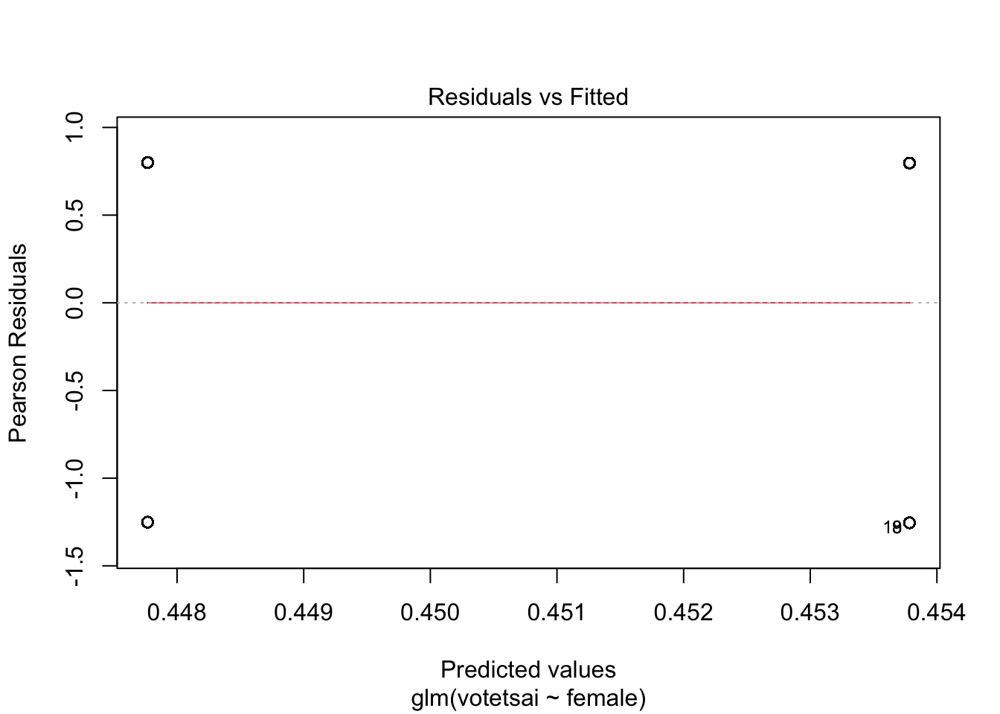
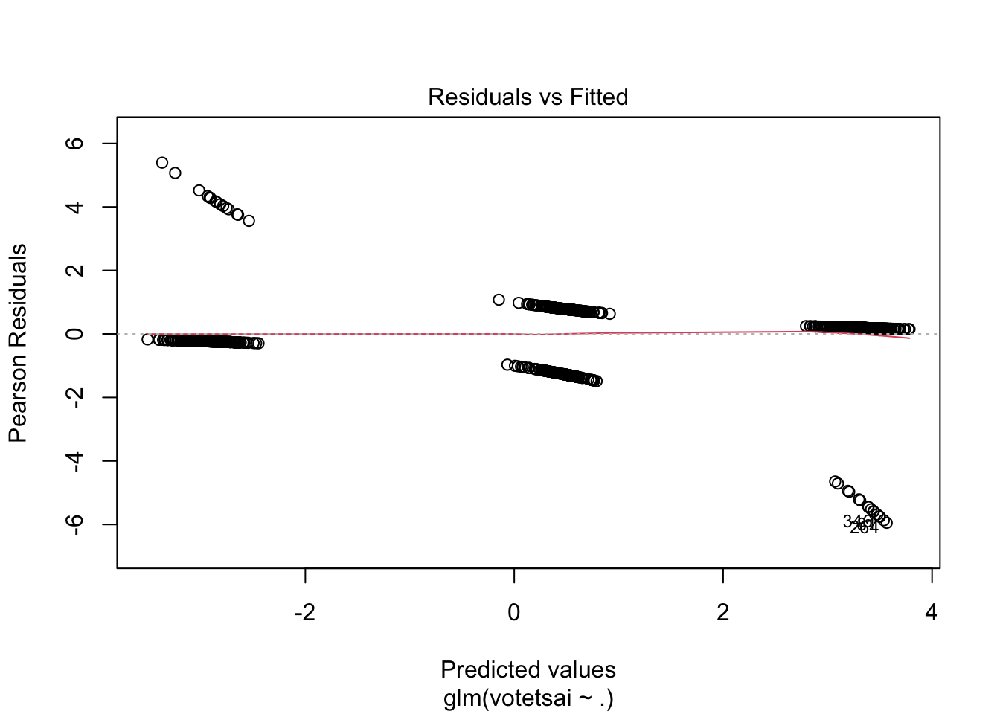

library(haven)
TEDS_2016 <-
read_stata("https://github.com/datageneration/home/blob/master/DataProgramming/data/TEDS_2016.dta?raw=true")Assignment 6
Loading the dataset
First, we will deal with missing values.
Checking missing values and removing rows with any missing data
sum(is.na(TEDS_2016))[1] 3008TEDS_2016 <- TEDS_2016[complete.cases(TEDS_2016), ]Logistic regression model ### Using female only
Female_onVotetsai <-glm(votetsai~female, data=TEDS_2016,family=binomial)
Female_onVotetsai
Call: glm(formula = votetsai ~ female, family = binomial, data = TEDS_2016)
Coefficients:
(Intercept) female
0.447767 0.006016
Degrees of Freedom: 1073 Total (i.e. Null); 1072 Residual
Null Deviance: 1436
Residual Deviance: 1436 AIC: 1440summary(Female_onVotetsai)
Call:
glm(formula = votetsai ~ female, family = binomial, data = TEDS_2016)
Coefficients:
Estimate Std. Error z value Pr(>|z|)
(Intercept) 0.447767 0.087110 5.140 2.74e-07 ***
female 0.006016 0.125233 0.048 0.962
---
Signif. codes: 0 '***' 0.001 '**' 0.01 '*' 0.05 '.' 0.1 ' ' 1
(Dispersion parameter for binomial family taken to be 1)
Null deviance: 1435.7 on 1073 degrees of freedom
Residual deviance: 1435.7 on 1072 degrees of freedom
AIC: 1439.7
Number of Fisher Scoring iterations: 4plot(Female_onVotetsai)
A. Are female voters more likely to vote for President Tsai? Why or why not?
Even though female seem to be more likely to vote for President Tsai than male, the coefficient of this predictor is not significantly different from zero. Therefore, knowing someone sex, we won’t be able to predict whether they vote for this president or not.
Add party ID variables (KMT, DPP) and other demographic variables (age, edu, income) to improve the model. ## Creating new dataframe with selected variables
IDDem_Data <-
subset(TEDS_2016, select = c(KMT, DPP, age, edu, income, votetsai))Do party id and demographic variables explain the model better?
IdandDem_onVotetsai <- glm(votetsai~., data=IDDem_Data,family=binomial)
summary(IdandDem_onVotetsai)
Call:
glm(formula = votetsai ~ ., family = binomial, data = IDDem_Data)
Coefficients:
Estimate Std. Error z value Pr(>|z|)
(Intercept) 1.520725 0.636228 2.390 0.0168 *
KMT -3.327068 0.290325 -11.460 <2e-16 ***
DPP 2.845990 0.279111 10.197 <2e-16 ***
age -0.012101 0.008057 -1.502 0.1331
edu -0.144241 0.092562 -1.558 0.1192
income 0.003150 0.035552 0.089 0.9294
---
Signif. codes: 0 '***' 0.001 '**' 0.01 '*' 0.05 '.' 0.1 ' ' 1
(Dispersion parameter for binomial family taken to be 1)
Null deviance: 1435.70 on 1073 degrees of freedom
Residual deviance: 699.69 on 1068 degrees of freedom
AIC: 711.69
Number of Fisher Scoring iterations: 6plot(IdandDem_onVotetsai)
According to our analysis, individuals party ID (such as, DPP and KMT) were the most significant predictors in explaining whether that individual votes for president Tsai or not. Age, education and income level did not seem to explain their voting inclination.
Finally, do their political influence and their identity explain the voting phenomena better?
IDDemPoliticalInfluence_Data <-
subset(TEDS_2016, select = c(KMT, DPP, age, edu, income, votetsai,
Independence, Econ_worse, Govt_dont_care, Minnan_father,
Mainland_father, Taiwanese))
PolitIDandDem_onVotetsai <-
glm(votetsai~., data=IDDemPoliticalInfluence_Data,family=binomial)
summary(PolitIDandDem_onVotetsai)
Call:
glm(formula = votetsai ~ ., family = binomial, data = IDDemPoliticalInfluence_Data)
Coefficients:
Estimate Std. Error z value Pr(>|z|)
(Intercept) -0.217977 0.738693 -0.295 0.767929
KMT -3.109864 0.301677 -10.309 < 2e-16 ***
DPP 2.409344 0.288237 8.359 < 2e-16 ***
age 0.003146 0.008859 0.355 0.722508
edu -0.017777 0.101105 -0.176 0.860429
income 0.009020 0.037731 0.239 0.811061
Independence 0.898944 0.268734 3.345 0.000822 ***
Econ_worse 0.397046 0.209321 1.897 0.057851 .
Govt_dont_care 0.078327 0.208197 0.376 0.706757
Minnan_father -0.434598 0.284290 -1.529 0.126335
Mainland_father -1.332148 0.428587 -3.108 0.001882 **
Taiwanese 0.961205 0.216108 4.448 8.68e-06 ***
---
Signif. codes: 0 '***' 0.001 '**' 0.01 '*' 0.05 '.' 0.1 ' ' 1
(Dispersion parameter for binomial family taken to be 1)
Null deviance: 1435.70 on 1073 degrees of freedom
Residual deviance: 637.82 on 1062 degrees of freedom
AIC: 661.82
Number of Fisher Scoring iterations: 6plot(PolitIDandDem_onVotetsai)Performing logistic regression model on this final set of dataset suggests that KMT, DPP, indepedence, mainland father and taiwanese were the most significant predictors.